Phase 5 T8 · 스타일 실루엣·악센트 시안
실제 게임 렌더(FighterView + 소프트 툰)로 찍은 3가지 방향입니다. 왼쪽부터 Barbarian(권투), Rogue(권투), Knight(무기), Mage(원거리) 순서입니다. 기준은 DS-VIS-02 "실루엣만으로 스타일 구분"과 DS-VIS-03 "흑백으로도 구분"입니다. 각 시안은 일반 / 흑백 / 순수 실루엣(단색 채움) 3장입니다.
A · 장비 실루엣 추천
권투 = 큰 둥근 장갑, 무기 = 양손 대검(1.15배), 원거리 = 지팡이 + 화염 구슬. 캐릭터별 모자·투구도 다시 켭니다.
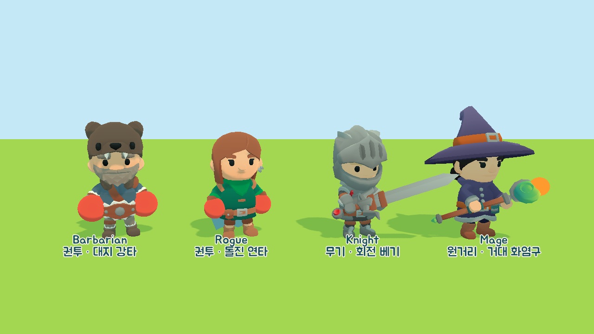
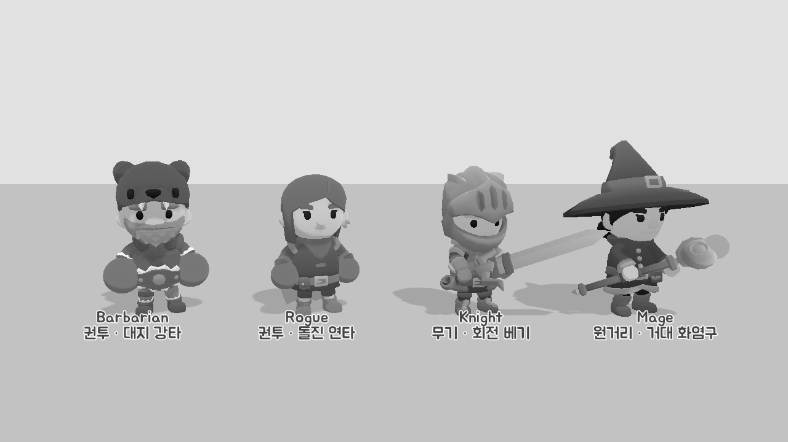
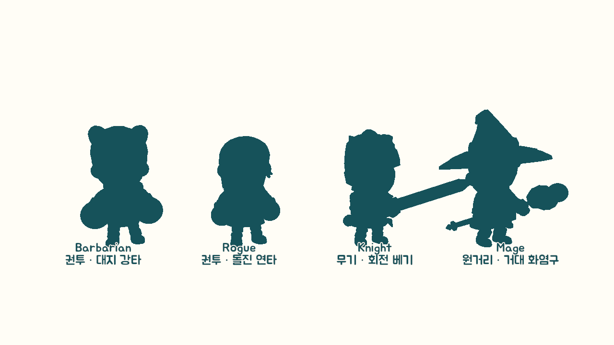
실루엣 판독: 3/3 스타일 구분
- 단색 실루엣만 봐도 장갑·대검·지팡이가 보입니다. 흑백 기준을 확실히 넘습니다.
- 무기의 리치가 눈에 보여 sim의 스타일별 사거리와 맞습니다.
- 설명 없이도 캐릭터 선택 화면에서 바로 읽힙니다.
- 아이템을 들면 손 슬롯이 겹칩니다. 들고 있는 동안 장비를 숨기는 규칙이 필요합니다.
- 대검·지팡이가 옆으로 뻗어 좁은 난전에서 옆 캐릭터를 가립니다.
- 두 권투 캐릭터는 장갑 크기와 모자로만 갈립니다.
B · 색 악센트 + 발광 트림
스타일당 악센트 토큰 하나를 씁니다. 권투 = fire 손목 랩, 무기 = petal_blue 어깨띠, 원거리 = berry 손 구슬 + 서클릿.
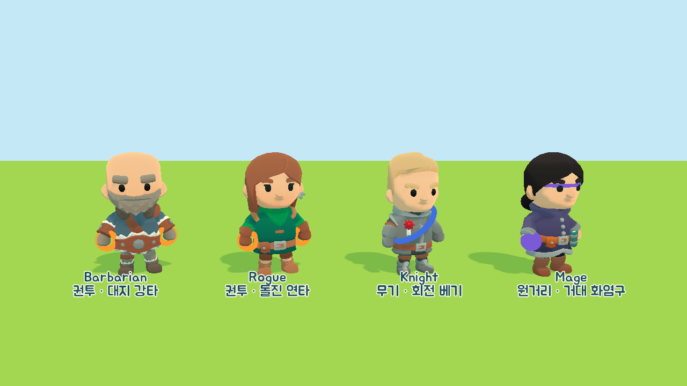
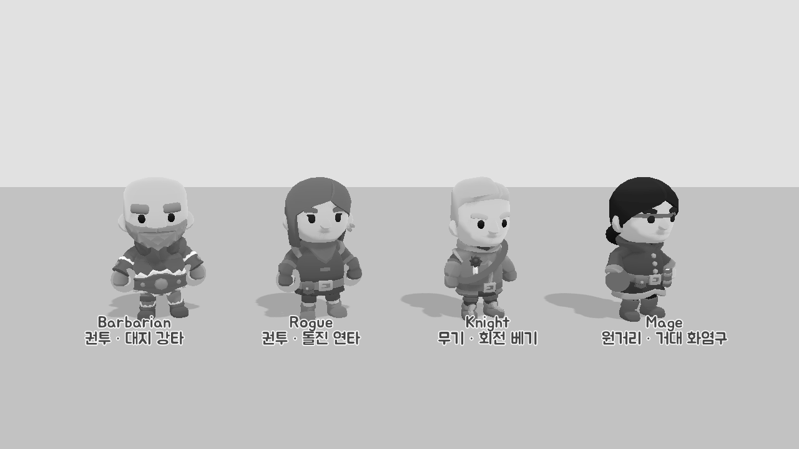
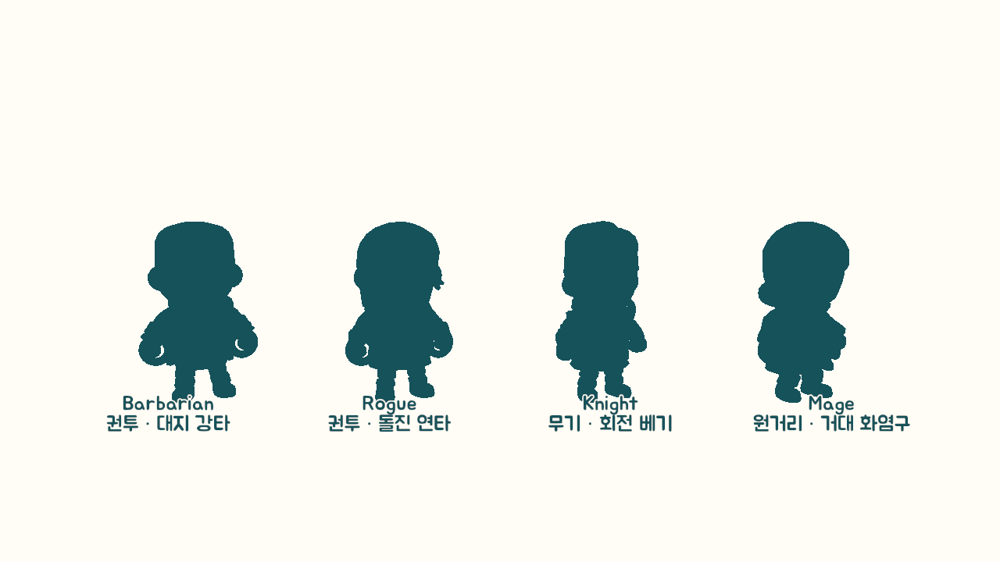
실루엣 판독: 0/3 (색에만 의존)
- 모델을 거의 바꾸지 않아 가볍고 아이템 손 슬롯과 충돌하지 않습니다.
- 컬러 화면에서는 악센트가 깔끔하고 필살기 이펙트 색과 이어 쓰기 좋습니다.
- 흑백·실루엣에서 거의 사라집니다. DS-VIS-03 흑백 기준에 걸립니다.
- 플레이어 색(P1~P4)과 악센트 색이 섞여 "누구"와 "어떤 스타일"이 헷갈립니다.
- 트림이 작아 먼 카메라에서는 안 보입니다.
C · 자세 + 떠 있는 스타일 아이콘
스타일별 대기 자세(권투 가드, 무기 방어 자세, 원거리 시전)와 머리 위의 작은 주먹·검·화염구 마크입니다.
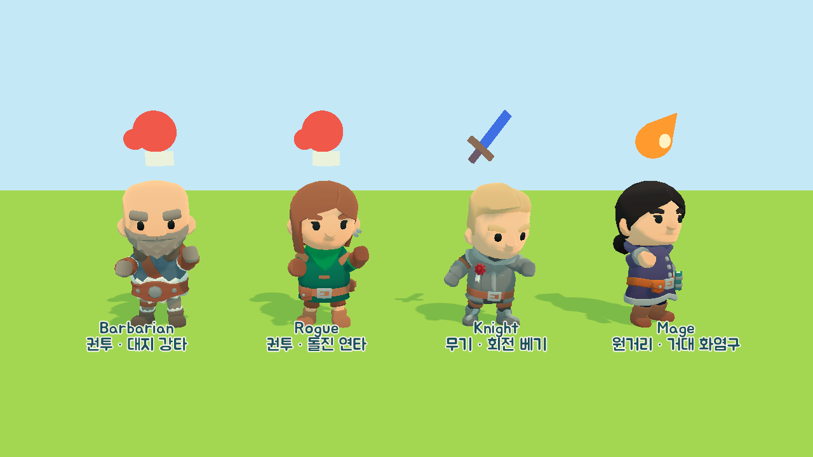
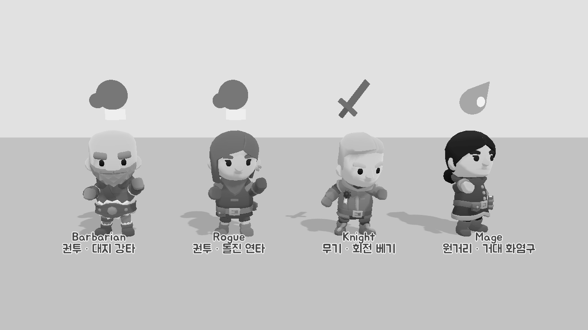
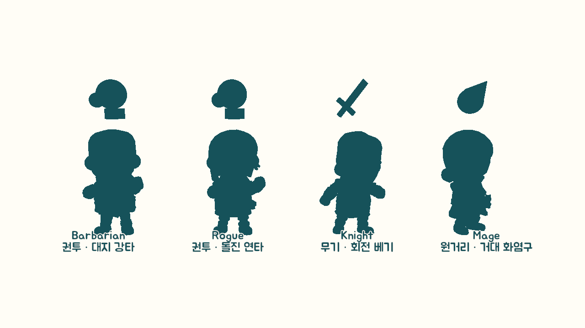
실루엣 판독: 3/3 (아이콘 덕분, 몸만으로는 1/3)
- 아이콘 모양이 흑백에서도 확실하게 읽힙니다.
- 모델 수정이 없어 아이템·애니메이션과 충돌하지 않습니다.
- 몸 실루엣은 거의 같습니다. 자세 차이는 대기 중에만 보이고 공격·이동 중에는 사라집니다.
- 머리 위 공간을 P1~P4 라벨과 나눠 써서 4인 난전에서 복잡해집니다.
- HUD 같은 표식이라 캐릭터 룩 자체는 그대로입니다.
기준 · 현재 룩 (장비 숨김)
비교용입니다. 지금은 네 캐릭터의 실루엣이 거의 같아 스타일을 구분할 수 없습니다.
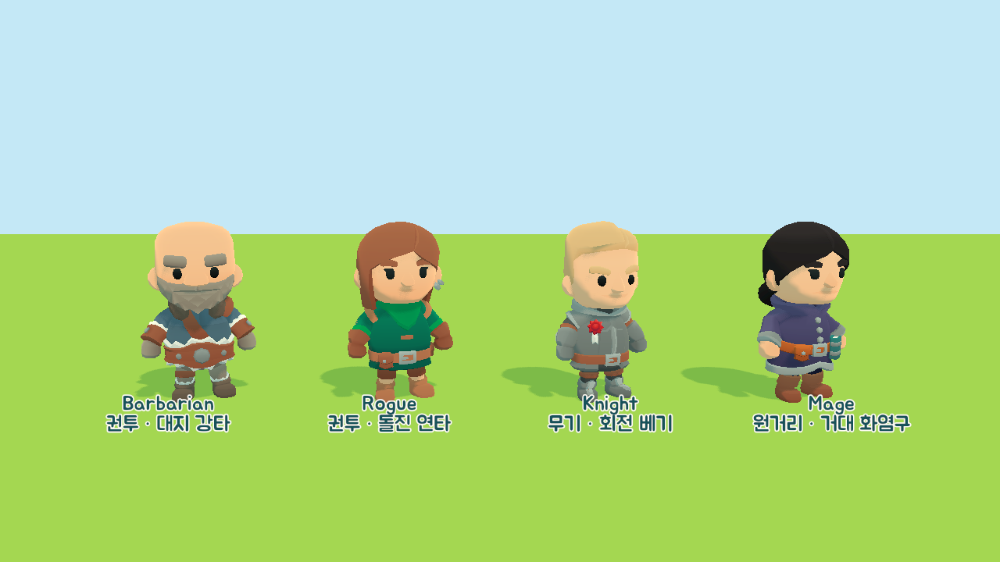
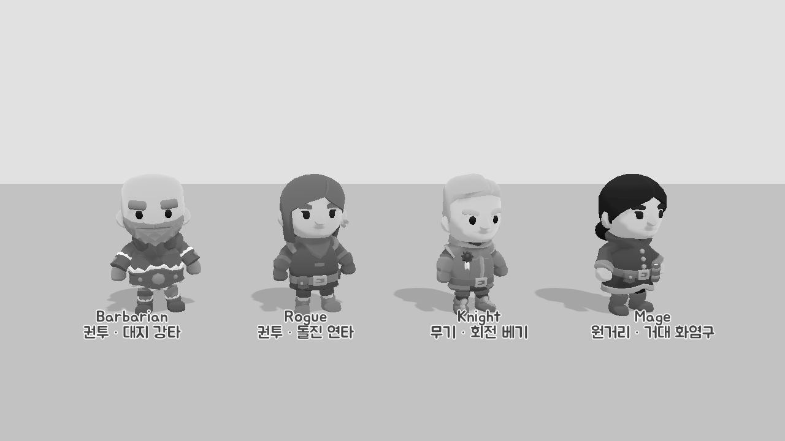
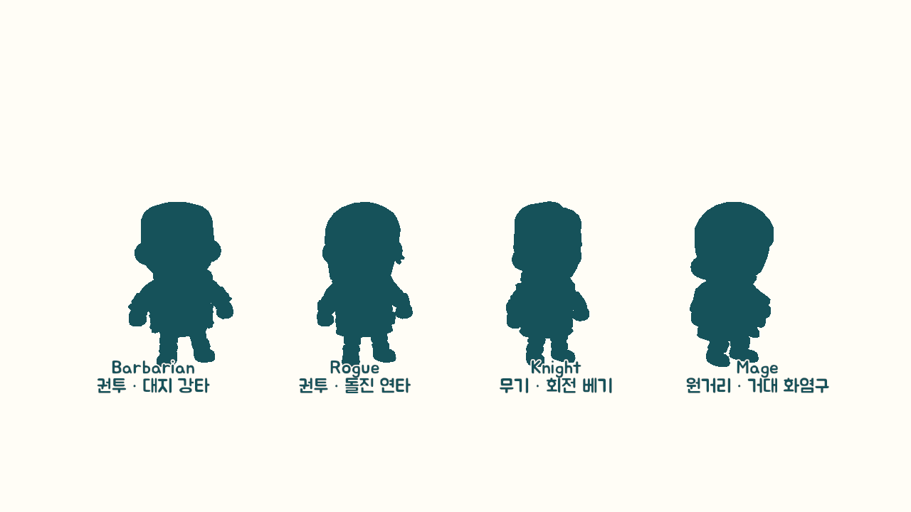
추천: A안 (장비 실루엣)
몸 실루엣만으로 세 스타일이 모두 갈리는 시안은 A뿐입니다. 확정되면 다음을 제안합니다. ① 아이템을 드는 동안에는 장갑·대검·지팡이를 숨깁니다(손 슬롯 하나 규칙). ② 대검·지팡이는 뒤로 기울여 옆 캐릭터를 덜 가리게 합니다. ③ 권투형만 C안의 가드 대기 자세를 빌려 두 권투 캐릭터의 인상을 더 굳힙니다. B안의 악센트 색은 룩이 아니라 필살기 게이지·컷인 색으로 쓰는 편이 좋습니다.